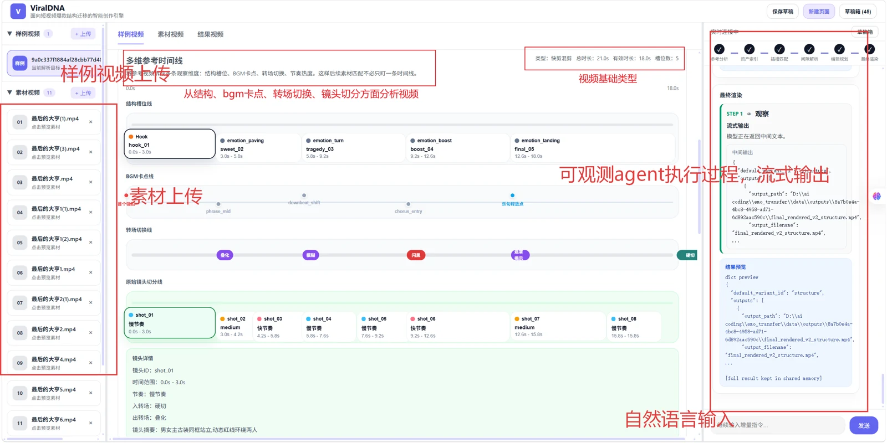
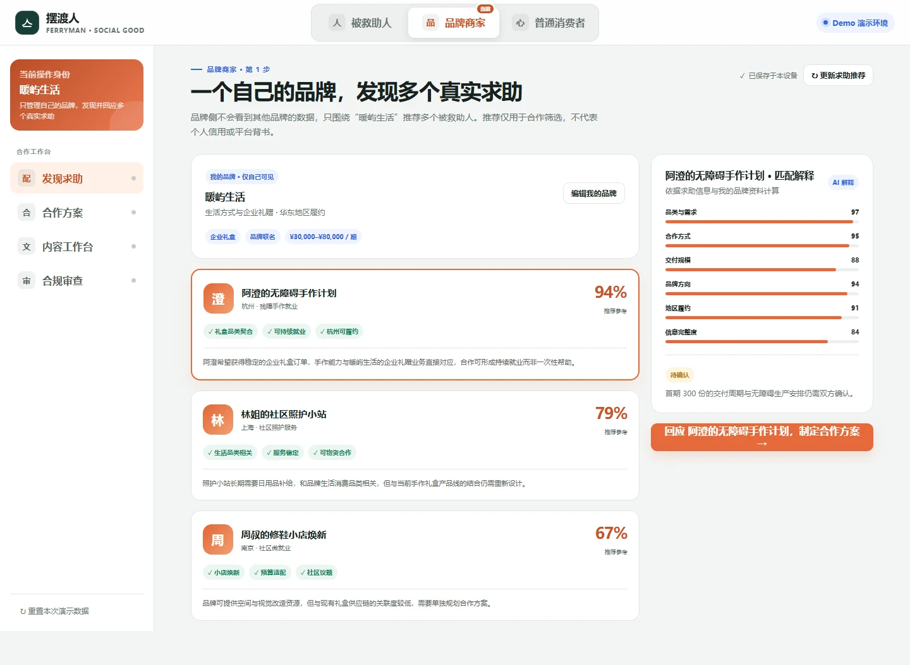
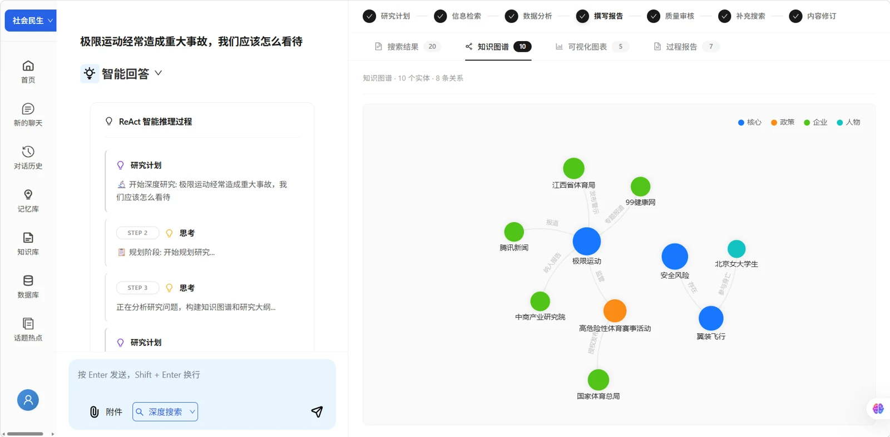

01 AI 创作 / 视频智能
ViralDNA
让视频创作的方法，可以迁移。
拆解参考视频的脚本、镜头节奏、字幕与音乐卡点，将这些“结构基因”迁移到新素材。多 Agent 协作完成素材匹配、缺口补全与剪辑时间线，输出可解释、可调整的视频方案。
字节全栈挑战赛 · 剪映创作赛道赛事结果：直通 Offer

查看实景AI APPLICATIONS · FULL-STACK · PRODUCT
你好，我是
把想法，做成可用的作品。
关注 AI 与真实场景的交汇。从短视频创作、新闻选题研究，到公益消费协作，用产品思考定义问题，用全栈开发把它落地。
好奇心驱动，
在真实问题里持续探索。
三个场景，三种产品探索
字节全栈挑战赛 · 剪映创作赛道
产品大赛 · 总提交作品 3 万
01 / SELECTED WORK
从问题出发，
走到可体验的产品。
01 AI 创作 / 视频智能
让视频创作的方法，可以迁移。
拆解参考视频的脚本、镜头节奏、字幕与音乐卡点，将这些“结构基因”迁移到新素材。多 Agent 协作完成素材匹配、缺口补全与剪辑时间线，输出可解释、可调整的视频方案。

查看实景02 产品设计 / 公益协作
让善意，成为可持续的连接。
连接被救助人、品牌商家与普通消费者。围绕合作型求助、品牌匹配、公益联名商品与可信反馈，设计三方协作的产品流程，让每一份支持都有清楚的规则与可追溯的依据。
前端交互 Demo，业务数据与 AI 处理均为本地模拟。

查看实景03 智能研究 / 新闻选题
从一个选题，走向有依据的洞察。
面向内容创作者的新闻选题调研助手。将热点发现、研究规划、多源检索、证据追踪、知识图谱与报告生成串成一条研究链，让分散的信息变成可验证、可追溯的调研结果。
网络搜索 + 个人知识库
规划 → 检索 → 分析 → 报告 → 审校

查看实景02 / THE JOURNEY
项目事件线
2026
研究工具 · 仓库创建
新闻选题调研助手开始积累，将选题规划、信息检索与研究报告连接起来。
查看记录创作工具 · 仓库公开
公开短视频结构迁移项目，探索从参考分析到素材补全与视频渲染的创作闭环。
认识这件作品公益协作 · 原型公开
公开三方协作的交互原型，用产品流程连接合作型求助、品牌与公益消费。
认识这件作品作品表达 · 展示站上线
完善 ViralDNA 与 NewsLens 项目展示站，把产品思路、技术路径和界面实景整理出来。
浏览作品时间来自公开仓库的创建与发布记录；赛事成绩在对应作品中展示。
我关心技术如何进入真实的工作与生活。
这三个作品，是我对这个问题的不同回答：让创作者更好地表达，让研究者更清楚地判断，让人与人的支持更透明地发生。
从需求拆解、交互设计，到前后端实现与 Agent 工作流，我希望把想法推进到一个可以被体验、被检查、继续被改进的状态。